Java Swingالكلاس JOptionPane
مقدمة
الكلاس JOptionPane يستخدم لإظهار نافذة خيارات (Option Pane) أمام للمستخدم لعدة أسباب:
لتحذيره أو إعلامه بشيء ما.
لسؤاله إذا كان موافقاً على أمر ما أم لا.
ليطلب منه إدخال قيمة.
الكلاس JOptionPane يوفر دوال كثيرة يمكن إستخدامها للحصول Message Dialog, Confirm Dialog و Input Dialog.
مصطلحات تقنية
| المصطلح |
معناه |
| Message Dialog |
عبارة عن نافذة منبثقة تستخدم لإعلام المستخدم بشيء ما.
نحصل على Message Dialog بواسطة الدالة showMessageDialog(). |
| Confirm Dialog |
عبارة عن نافذة منبثقة تستخدم لسؤال المستخدم إذا كان موافقاً على شيء ما أم لا.
نحصل على Confirm Dialog بواسطة الدالة showConfirmDialog(). |
| Input Dialog |
عبارة عن نافذة منبثقة تستخدم لجعل المستخدم يقوم بإدخال أو إختيار قيمة ما
نحصل على Input Dialog بواسطة الدالة showInputDialog(). |
معلومة تقنية
الـ Option Pane عبارة عن Internal Frame لأنها عبارة عن نافذة تظهر بداخل النافذة التي تستدعى منها.
بناؤه
public class JOptionPane
extends JComponent
implements Accessible
ثوابت الكلاس JOptionPane
الجدول التالي يحتوي على ثوابت الكلاس JOptionPane المخصصة لتحديد أيقونة الـ Option Pane.
| الثابت |
إستخدامه |
الأيقونة التي يظهرها |
ERROR_MESSAGE |
يظهر أيقونة تلفت نظر المستخدم إلى وجود خطأ ما. |
|
INFORMATION_MESSAGE |
يظهر أيقونة تلفت نظر المستخدم لقراءة معلومة ما. |
|
WARNING_MESSAGE |
يظهر أيقونة تلفت نظر المستخدم لوجود تحذير ما. |
|
QUESTION_MESSAGE |
يظهر أيقونة تلفت نظر المستخدم لسؤاله عن شيئاً ما. |
|
PLAIN_MESSAGE |
يستخدم لعدم إظهار أي أيقونة. |
|
الجدول التالي يحتوي على ثوابت الكلاس JOptionPane المخصصة لتحديد الأزرار التي ستوجد في الـ Option Pane و تحديداً في الـ Confirm Dialog.
| الثابت |
إستخدامه |
الأزرار التي يظهرها |
YES_NO_OPTION |
يستخدم لإظهار الأزرار Yes و No في الـ Option Pane. |
|
YES_NO_CANCEL_OPTION |
ييستخدم لإظهار الأزرار Yes و No و Cancel في الـ Option Pane. |
|
OK_CANCEL_OPTION |
يستخدم لإظهار الأزرار OK و Cancel في الـ Option Pane. |
|
دوال الكلاس JOptionPane
الجدول التالي يحتوي على أهم الدوال الموجودة في الكلاس JOptionPane.
| الدالة مع تعريفها |
public static void showMessageDialog(Component parentComponent, Object message)
تظهر Option Pane يعرض نافذة فيها رسالة أمام المستخدم.
|
public static void showMessageDialog(Component parentComponent, Object message, String title, int messageType)
تظهر Option Pane يعرض نافذة فيها رسالة أمام المستخدم لها عنوان و أيقونة من الأيقونات المجهزة في جافا.
مكان الباراميتر parentComponent نضع الـ Frame التي نريده أن يظهر بداخلها. أو نضع null لجعله يظهر في وسط شاشة المستخدم. مكان الباراميتر message نضع نص النافذة التي ستظهر. مكان الباراميتر title نضع نص يمثل عنوان النافذة التي ستظهر. مكان الباراميتر messageType نضع إحدى الثوابت الموجودة في الكلاس JOptionPane المخصصة لإظهار أيقونة في الـ Option Pane.
|
public static void showMessageDialog(Component parentComponent, Object message, String title, int messageType, Icon icon)
تظهر Option Pane يعرض نافذة فيها رسالة أمام المستخدم لها عنوان و أيقونة غير موجودة في جافا.
مكان الباراميتر parentComponent نضع الـ Frame التي نريده أن يظهر بداخلها. أو نضع null لجعله يظهر في وسط شاشة المستخدم. مكان الباراميتر message نضع نص النافذة التي ستظهر. مكان الباراميتر title نضع نص يمثل عنوان النافذة التي ستظهر. مكان الباراميتر messageType نضع إحدى الثوابت الموجودة في الكلاس JOptionPane المخصصة لإظهار أيقونة في الـ Option Pane. مكان الباراميتر icon نضع كائن من الكلاس Icon يحتوي على رابط الأيقونة التي ستظهر.
|
public static int showConfirmDialog(Component parentComponent, Object message)
تظهر Option Pane يعرض نافذة أمام المستخدم فيها نص الذي تم تمريره لها و ثلاث خيارات Yes, No و Cancel.
إضافة إلى ذلك تضع النص ( Select an Option ) كعنوان للنافذة.
|
public static int showConfirmDialog(Component parentComponent, Object message, String title, int optionType)
تظهر Option Pane يعرض نافذة أمام المستخدم فيها النص الذي تم تمريره لها و الخيارات التي تم تحديدها.
مكان الباراميتر parentComponent نضع الـ Frame التي نريده أن يظهر بداخلها. أو نضع null لجعله يظهر في وسط شاشة المستخدم. مكان الباراميتر message نضع نص النافذة التي ستظهر. مكان الباراميتر title نضع نص يمثل عنوان النافذة التي ستظهر. مكان الباراميتر optionType نضع إحدى الثوابت الموجودة في الكلاس JOptionPane المخصصة لتحديد الخيارات التي ستظهر في الـ Option Pane.
|
public static int showConfirmDialog(Component parentComponent, Object message, String title, int optionType, int messageType)
تظهر Option Pane يعرض نافذة أمام المستخدم فيها النص الذي تم تمريره لها و الخيارات و الأيقونة من الأيقونات المجهزة في جافا.
مكان الباراميتر parentComponent نضع الـ Frame التي نريده أن يظهر بداخلها. أو نضع null لجعله يظهر في وسط شاشة المستخدم. مكان الباراميتر message نضع نص النافذة التي ستظهر. مكان الباراميتر title نضع نص يمثل عنوان النافذة التي ستظهر. مكان الباراميتر optionType نضع إحدى الثوابت الموجودة في الكلاس JOptionPane المخصصة لتحديد الخيارات التي ستظهر في الـ Option Pane. مكان الباراميتر messageType نضع إحدى الثوابت الموجودة في الكلاس JOptionPane المخصصة لإظهار أيقونة في الـ Option Pane.
|
public static int showConfirmDialog(Component parentComponent, Object message, String title, int optionType, int messageType, Icon icon)
تظهر Option Pane يعرض نافذة أمام المستخدم فيها النص الذي تم تمريره لها و الخيارات و الأيقونة التي تم تحديدها.
مكان الباراميتر parentComponent نضع الـ Frame التي نريده أن يظهر بداخلها. أو نضع null لجعله يظهر في وسط شاشة المستخدم. مكان الباراميتر message نضع نص النافذة التي ستظهر. مكان الباراميتر title نضع نص يمثل عنوان النافذة التي ستظهر. مكان الباراميتر optionType نضع إحدى الثوابت الموجودة في الكلاس JOptionPane المخصصة لتحديد الخيارات التي ستظهر في الـ Option Pane. مكان الباراميتر messageType نضع إحدى الثوابت الموجودة في الكلاس JOptionPane المخصصة لإظهار أيقونة في الـ Option Pane. مكان الباراميتر icon نضع كائن من الكلاس Icon يحتوي على رابط الأيقونة التي ستظهر.
|
public static String showInputDialog(Object message)
تظهر Option Pane يعرض نافذة أمام المستخدم فيها نص الذي تم تمريره لها و مربع نص و خياران Ok و Cancel.
إضافة إلى ذلك تضع النص ( Input ) كعنوان للنافذة.
مكان الباراميتر message نضع نص النافذة التي ستظهر. |
public static String showInputDialog(Object message, Object initialSelectionValue)
تظهر Option Pane يعرض نافذة أمام المستخدم فيها نص الذي تم تمريره لها و مربع نص يحتوي على قيمة أولية و خياران Ok و Cancel.
إضافة إلى ذلك تضع النص ( Input ) كعنوان للنافذة.
|
public static String showInputDialog(Component parentComponent, Object message)
تظهر Option Pane يعرض نافذة أمام المستخدم فيها نص الذي تم تمريره لها و مربع نص و خياران Ok و Cancel.
إضافة إلى ذلك تضع النص ( Input ) كعنوان للنافذة.
|
public static String showInputDialog(Component parentComponent, Object message, Object initialSelectionValue)
تظهر Option Pane يعرض نافذة أمام المستخدم فيها نص الذي تم تمريره لها و مربع نص يحتوي على قيمة أولية و خياران Ok و Cancel.
إضافة إلى ذلك تضع النص ( Input ) كعنوان للنافذة.
مكان الباراميتر parentComponent نضع الـ Frame التي نريده أن يظهر بداخلها. أو نضع null لجعله يظهر في وسط شاشة المستخدم. مكان الباراميتر message نضع نص النافذة التي ستظهر. مكان الباراميتر initialSelectionValue نضع قيمة إفتراضية في مربع النص.
|
public static String showInputDialog(Component parentComponent, Object message, String title, int messageType)
تظهر Option Pane يعرض نافذة أمام المستخدم فيها نص الذي تم تمريره لها و مربع نص يحتوي على قيمة أولية و خياران Ok و Cancel.
مكان الباراميتر parentComponent نضع الـ Frame التي نريده أن يظهر بداخلها. أو نضع null لجعله يظهر في وسط شاشة المستخدم. مكان الباراميتر message نضع نص النافذة التي ستظهر. مكان الباراميتر title نضع نص يمثل عنوان النافذة التي ستظهر. مكان الباراميتر messageType نضع إحدى الثوابت الموجودة في الكلاس JOptionPane المخصصة لإظهار أيقونة في الـ Option Pane.
|
أشكال الـ JOptionPane
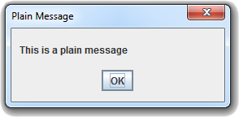
JOptionPane.showMessageDialog(null, "This is a plain message", "Plain Message", JOptionPane.PLAIN_MESSAGE);
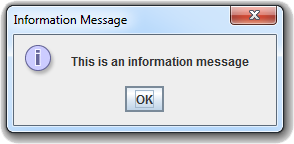
JOptionPane.showMessageDialog(null, "This is an information message", "Information Message", JOptionPane.INFORMATION_MESSAGE);
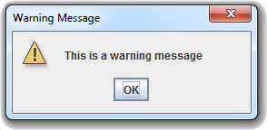
JOptionPane.showMessageDialog(null, "This is a warning message", "Warning Message", JOptionPane.WARNING_MESSAGE);
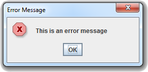
JOptionPane.showMessageDialog(null, "This is an error message", "Error Message", JOptionPane.ERROR_MESSAGE);
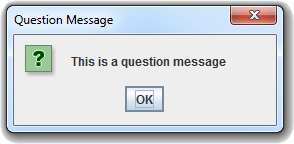
JOptionPane.showMessageDialog(null, "This is a question message", "Quesiton Message", JOptionPane.QUESTION_MESSAGE);
JOptionPane.showConfirmDialog(null,
"You are going to delete you history.\nAre you sure?",
"Delete History",
JOptionPane.YES_NO_CANCEL_OPTION,
JOptionPane.WARNING_MESSAGE);
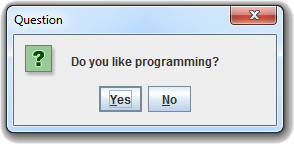
JOptionPane.showConfirmDialog(null,
"Do you like programming?",
"Quesiton",
JOptionPane.YES_NO_OPTION,
JOptionPane.QUESTION_MESSAGE);
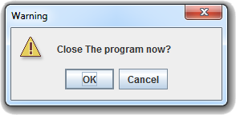
JOptionPane.showConfirmDialog(null,
"Close The program now?",
"Warning",
JOptionPane.OK_CANCEL_OPTION,
JOptionPane.WARNING_MESSAGE);
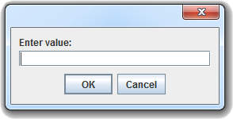
JOptionPane.showInputDialog(null, "Enter value:", "", JOptionPane.PLAIN_MESSAGE);
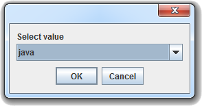
Object[] values = {"java", "css", "c++", "android"};
JOptionPane.showInputDialog(null, "Select value", "", JOptionPane.PLAIN_MESSAGE, null, values, values[0]);
أمثلة شاملة
المثال الأول
المثال التالي يعلمك طريقة إظهار Message Dialog. كل زر يظهر Message Dialog مختلف.
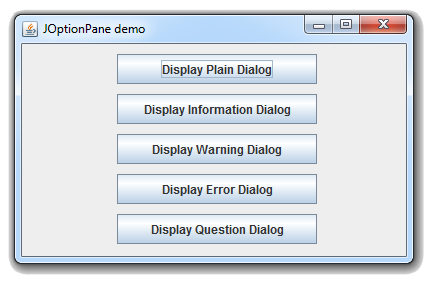
شاهد المثال »
المثال الثاني
المثال التالي يعلمك طريقة إظهار Confirm Dialog. كل زر يظهر Confirm Dialog مختلف.
إضافةً إلى ذلك ستتعلم كيف تنفذ أوامر معينة بناءاً على كل زر موجود في الـ Confirm Dialog في حال قام المستخدم بالنقر عليه.
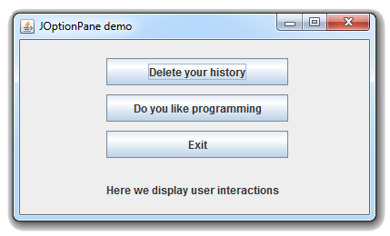
شاهد المثال »
المثال الثالث
المثال التالي يعلمك طريقة إظهار Input Dialog.
عند النقر على الزر Search سيظهر Input Dialog تطلب من المستخدم إدخال قيمة في Text Field.
عند النقر على الزر Select سيظهر Input Dialog تطلب من المستخدم إختيار قيمة من Combo Box.
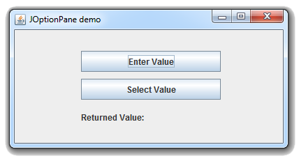
شاهد المثال »

 محرر الويب
محرر الويب نظام الألوان
نظام الألوان محول الوحدات
محول الوحدات محلل عناوين الشبكات
محلل عناوين الشبكات